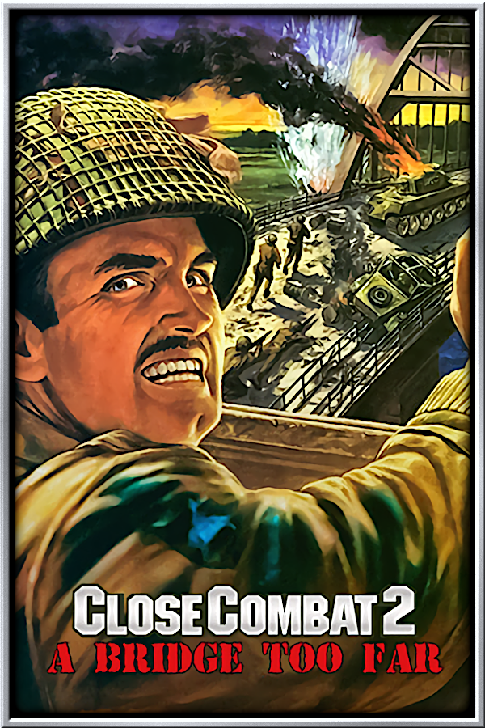

I played this game when I was only 10. I had a blast! At that time I thought gaming could not be better than that.
It had only three classes to play: warrior, rogue and sorcerer. After the Hellfire expansion release (expansion means today's DLC) the class monk was included.
It is funny because I was a little affraid to play this game and mess with the forces of the evil xD
Classic RPG game with hack and slash action, a must play game.
Good times...

Amazing RTS game inspired by WW2 events.
You can command either the allies or the germans on their way to victory
Of course, the graphics compared with what we got today is very poor. But the mechanics of the game is amazing.
You setup the distribution of your units (soldiers, tanks and so on) at the beggining of the battle and then start moving them around.
Strategy is really necessary: deploying smokes, surpressing fires and other combat skills are needed to achieve the victory in every map.
What I like about this game is that you need to have some solid strategy and above all patience to execute it.

This game is pretty popular in the gaming community.
Another RTS where you have to advance through the ages managing the economy of your empire.
There are several civilizations to choose from and each has its own ups and downs.
People still play this game, but gamers prefer Age of Empires 2. I do not know why and never did any research on the topic.
I lost count of how many hours I spent playing this game and improving my economics skill. I have never beaten the PC in the hardest difficulty. But this is because they manage their economy perfectly and take the best decisions in the blink of an eye. Not fair xD
Surfing
Best vibe ever
Being from a big city like São Paulo the best entertainment you get is the shopping malls. Personally speaking, it is not enough for me.
Luckly we have a beach only 80 km away from the city, making sand, sun and sea a real breeze.
The best time I had in my small surfing "carrer" was from 2008 to 2013. I used to go to the beach every single weekend.
In April 2009 I met my wife. We had very good years there in the beach. Oh boy, how I enjoyed those waves! I felt like life could not be any better than having my girlfriend with me and my surfboard.
I even tried to teach her how to surf but I was not a good teacher and she never stood up. But who cares? We had lots of fun anyway!
Jiu-Jitsu
O S S
In 2021 right after the pandemic me and my wife moved to the beach. I thought it would be like surfing everyday!
But what really happened was that in the course of one year I only went in the sea two times (as in 1+1). Why? Because of sanitary issues. Beaches in Brazil receive all the contents of your toilet without any kind of treatment. Yes, the way you make it while seated is what the beach gets. Literaly: what you see is what you get.
So I decided to sell my surfboards and buy a gi (or kimono) and decided to learn jiu-jitsu.

The first school I went to was not very good, but I was lucky enough to find a black-belt to teach me the basics.
I'm still practicing it and evolving very fast!